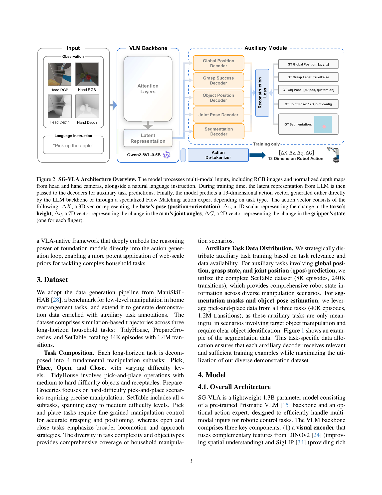
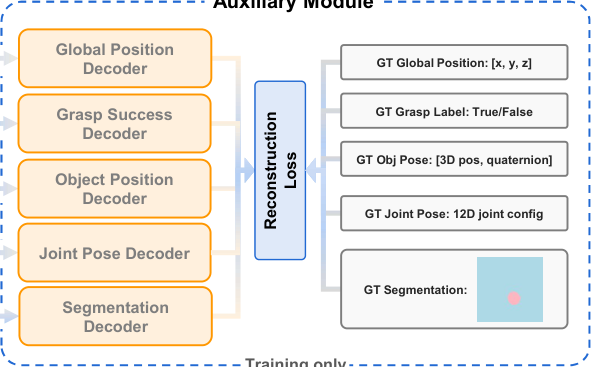
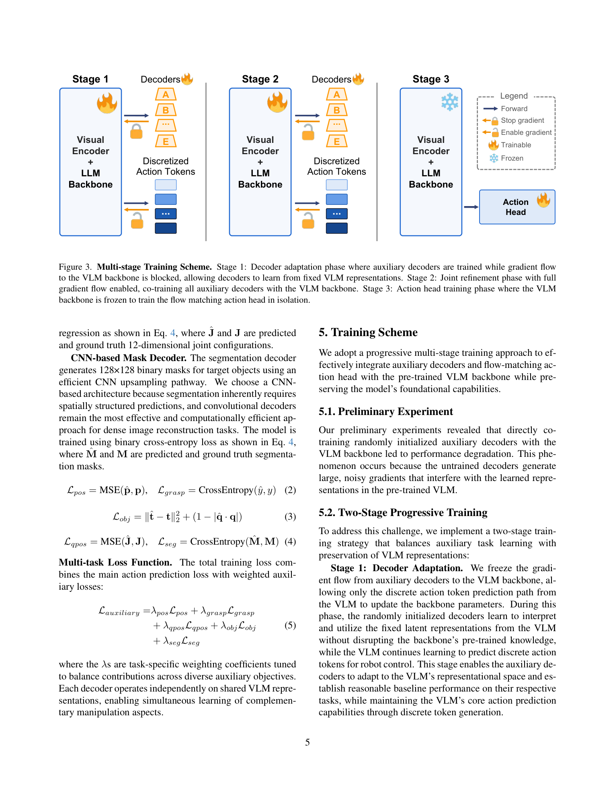
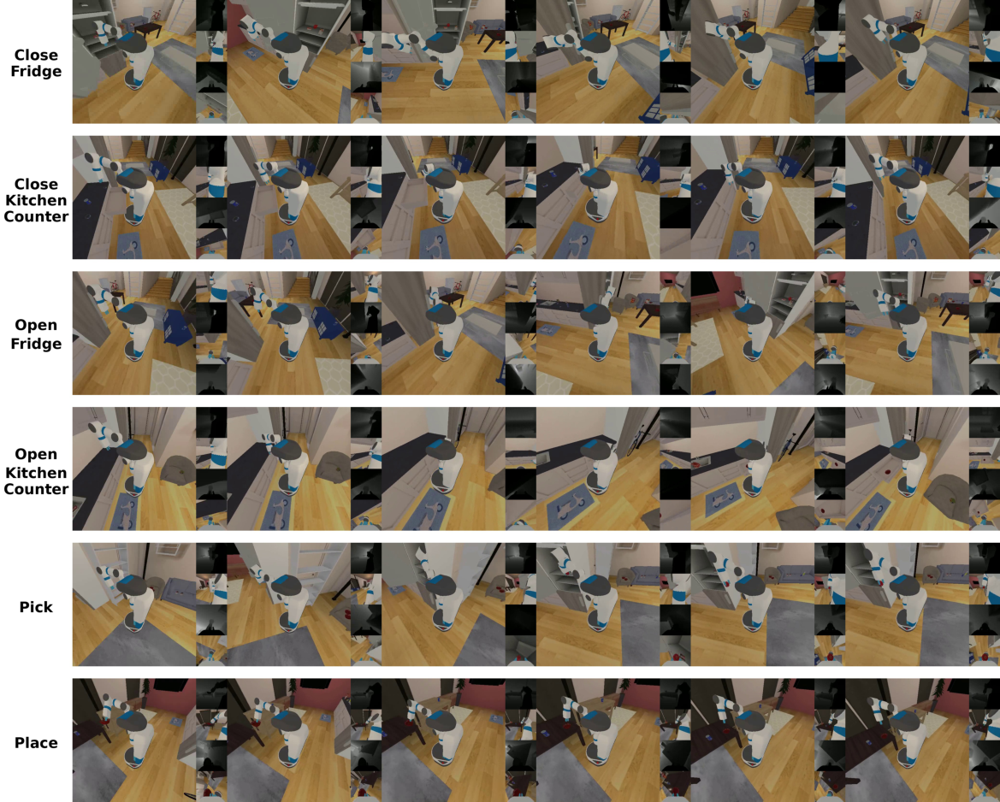

💡速记层 · 思想 / 逻辑 / 方法
默认读完就走的一层——只讲思想、逻辑、方法；效果只作验证。要核对原文/钻细节再看下面的「深读层」。
- Mobile manipulation 需要同时理解全局场景布局 + 精细物体几何 + 高维连续动作（13 DoF），远比桌面操作复杂。
- 标准 VLA 直接 imitation learning 仅输出动作向量，模型没有显式压力去学空间表征——结果只有 60% 成功率。
- 若在 shared visual-language backbone 上同时挂辅助解码器（重建 segmentation / 位姿 / 关节角等），则骨干被强迫学习"空间感知、操作感知"的 latent representation。
- 单纯挂解码器会破坏预训练 VLM——随机初始化的解码器产生大梯度干扰。需要渐进式三阶段训练先固定 backbone 适应解码器，再联合调优，最后单独训练 flow matching action head。
- 辅助任务 + multi-view depth 输入组合达到 73%，比直接 imitation learning 提升 22%，验证了"空间辅助监督"的思路。
在 ManiSkill-HAB benchmark（TidyHouse / PrepareGroceries / SetTable 三类任务，44K episodes）上，SG-VLA 全辅助任务 + 渐进训练比直接 imitation learning 基线从 60% → 73%；比原始 OpenVLA（7B）从 4% → 73%。
想看具体数字（点开）
- OpenVLA (7B, single-view RGB): 平均 0.04 成功率
- Base VLM + multi-view + depth (direct IL): 0.60
- SG-VLA naive co-training (无渐进): 0.51（降低）
- SG-VLA + qpos only (渐进): 0.71
- SG-VLA + all aux (渐进): 0.73
- SG-VLA + action head (flow matching): 0.69（整体略降，pick 显著提升 0.13→0.27）
- seg + obj pos 辅助任务在 TidyHouse pick 从 0.07 → 0.33，place 从 0.40 → 0.73
Track A（移动操作 VLA）直接命中：这正是「如何让 VLA backbone 学到空间感知表征」的具体工程方案。辅助解码器 co-training + multi-view depth 输入的套路可直接借鉴到人形/移动操作系统。空间辅助监督中「joint pose decoder」「grasp decoder」对具身机器人尤为有价值。Track B（足式控制算法）不相关——本文不涉及 locomotion/底层步态控制。建议深读，特别是辅助任务设计和渐进训练策略。
◆核心观点 · 证据
每条 = 中文论点 + 📍页/节 + 🔤逐字原文(Ctrl-F 锚点) + 🀄译文 + 💡解读。
Mobile manipulation tasks require robots to simultaneously reason about global scene layout, fine-grained object geometry, and high-dimensional continuous actions, making standard imitation learning insufficient for robust control.
The original OpenVLA model (∼7B parameters) [16] with single-view RGB input achieves extremely poor performance across all tasks (0.04 average success rate) after trained with same number of epochs as our models, highlighting the limitations of standard vision-language models when applied directly to complex household manipulation scenarios.

we co-train a suite of auxiliary decoders that reconstruct interpretable intermediate signals—including global robot position, joint configurations, grasp affordances, target-object relative pose, and segmentation masks—from shared visual-language features. These auxiliary objectives supply dense supervision that encourages the backbone to develop spatially grounded, manipulation-aware latent representations.

OpenVLA with enhanced modalities (multi-view + depth) achieves a dramatic 8× improvement in average success rate (from 0.04 to 0.32), with particularly notable gains in drawer manipulation tasks where success rates increase from near-zero to 0.30-0.67.
However, incorporating temporal history (past 4 actions) degrades performance to 0.49. This counter-intuitive result may indicate that the model struggles to effectively integrate temporal information, or that the evaluated tasks are sufficiently reactive that historical context provides limited additional information.

Our preliminary experiments revealed that directly co-training randomly initialized auxiliary decoders with the VLM backbone led to performance degradation. This phenomenon occurs because the untrained decoders generate large, noisy gradients that interfere with the learned representations in the pre-trained VLM.
Training all auxiliary tasks with progressive methodology ("+ all" with progressive training in Table 3) achieves 0.73 average success rate, representing a 22% improvement over the best input modality configuration alone.
Joint position (qpos): Reconstructing qpos of current state provides the most substantial and consistent improvements across all task categories (0.71 average), particularly excelling in manipulation tasks like place (0.67) and drawer operations (0.70 and 0.90). This suggests that explicit joint awareness significantly enhances the model's understanding of manipulation dynamics.
Unlike previous auxiliary tasks that showed selective improvements, segmentation and object position reconstruction provide consistent benefits across all manipulation scenarios. Place tasks show the most substantial gains, with improvements ranging from 55-81% across different environments.
The flow matching action head shows a clear dichotomy in its effectiveness across different manipulation primitives. Pick tasks benefit substantially from continuous action generation, with success rates more than doubling from 0.13 to 0.27. This improvement suggests that the fine-grained control afforded by continuous actions is particularly valuable for precise grasping motions, where small variations in approach angle, grip force, or contact points can significantly impact success.
Conversely, the action head causes notable performance drops in Open tasks across both fridge and drawer categories. Fridge opening decreases from 0.87 to 0.76, while drawer opening drops from 0.77 to 0.60. These results suggest that the flow matching action head excels at generating fine-grained manipulation actions but struggles with mobility-oriented control, where discrete action tokens may be more suitable for coordinated base movement and navigation.

We validate our approach on the challenging ManiSkill-HAB benchmark [28], showing that SG-VLA achieves average success rates of 73% compared to 60% for direct imitation learning on home rearrangement tasks, demonstrating the effectiveness of our proposed enhancements on a common VLA architecture.
⎘开源状态
论文未提供代码链接；致谢中提及 Lambda Inc. 的算力支持。
- 代码
- 未公开 论文正文及 arXiv 页面未提供任何代码仓库链接
- 权重
- 未公开 无预训练权重发布
- 数据
- 部分 使用 ManiSkill-HAB benchmark 数据（公开），但 44K episodes 自采轨迹未释出
- 评测环境
- 公开 ManiSkill-HAB benchmark 已在 ICLR 2025 发表，可独立获取
辅助任务数据（segmentation mask、object pose GT、joint pose GT）来自 ManiSkill-HAB 的仿真管线生成，虽然流程有描述（Section 3），但 44K episodes 的完整数据集和 3-stage 训练脚本均未开放。复现需从头重建数据生成流程。
This work is supported by NSF award IIS-2127544 and NSF award IIS-2433768. We thank Lambda Inc. for their compute resource help on this project.
⚖批判 · 评级
① 清晰的工程贡献：multi-view depth + 辅助解码器 + 渐进训练，每项都有受控消融验证，配方可直接借鉴。② 发现了 flow matching head 的「任务类型二分律」（精细操作受益 / 导航运动有损），对 action head 设计有实际指导价值。③ 辅助解码器设计细粒度（不同 decoder 用不同架构：MLP/Transformer/CNN），有理论逻辑支撑。④ 作为 2026 年的新工作，直接针对 mobile manipulation VLA 这一尚未充分研究的方向。
① 仅在仿真中评测：ManiSkill-HAB 是纯仿真 benchmark，没有 sim-to-real gap 的任何讨论，实机结果未知。② 基线太弱：主要对比是同架构的直接 IL，没有对比其他 mobile manipulation 方法（如 Mobile ALOHA、AC-DiT 等），难以判断绝对水平。③ 无开源代码/权重，复现门槛高。④ Flow Matching head 结果混乱：平均性能反而不如无 action head 版本（0.69 vs 0.73），说明方法尚不成熟。⑤ 模型仅 1.3B，backbone 是 Qwen2.5-0.5B，语义推理能力相对有限。
评级：Valuable 辅助解码器 co-training 的工程思路清晰且有实用价值，但仅有仿真结果、无开源、基线薄弱限制了其影响力。可作为「空间辅助监督」方向的参考实现。